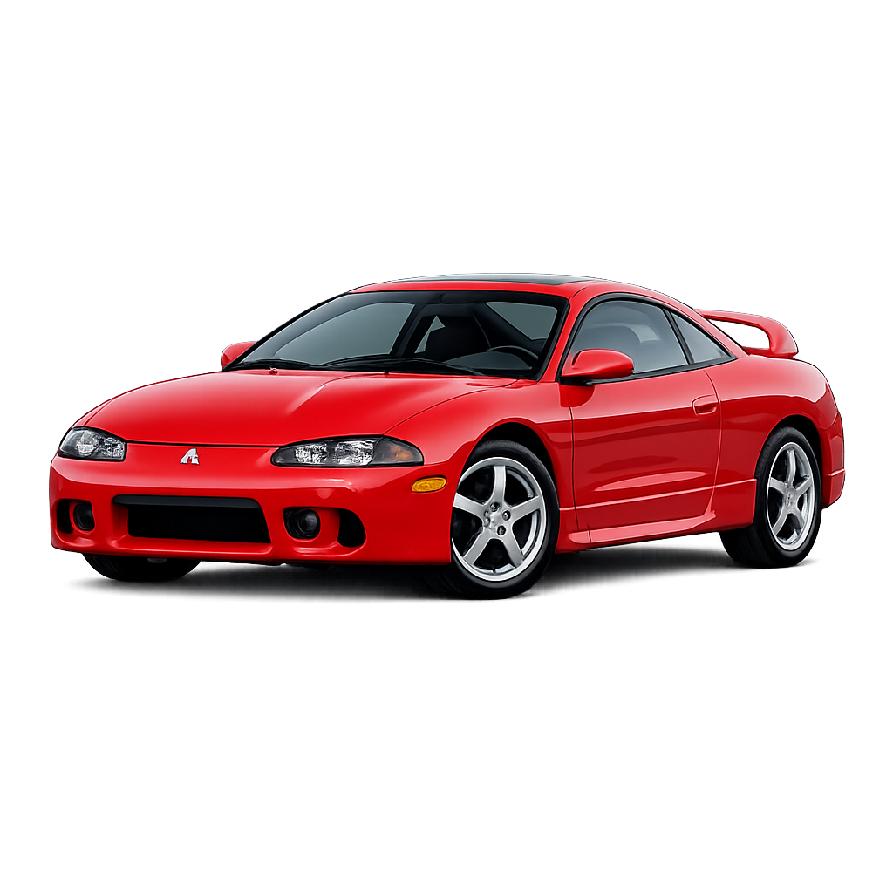

Sobre a Vida do Artista
Oliver Tree Nickell foi um cantor-compositor, rapper, produtor musical, comediante e cineasta norte-americano. Tree fez sucesso durante o inicio da decada de 2020, acumulando bilhões de streams nas plataformas digitais, principalmente no Spotify.